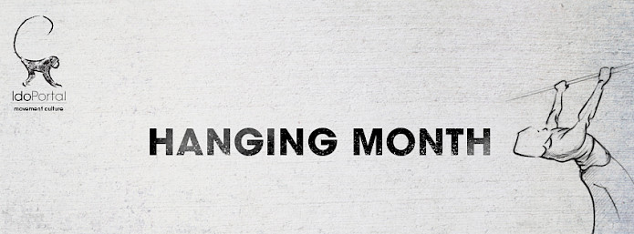

A few questions that pop up again and again in the Movement Culture FB Group: (you should join it if you haven't already - lots of communication is going on through it)
1. Should I use Rings or a bar for my hanging?
Rings are more accommodating for alignment but are less stable. They are a better fit for strong and inflexible pair of shoulders. They are also a better fit for anyone with wrist/elbow issues.
The bar is less accommodating but sturdier - it is a better fit for mobile but weaker shoulders.
If you have both optimal range of motion and strength - vary the types of anchors you use as much as possible - bar, parallel bars, slanted bars, rings, ropes, towel, top of a wall, climbing grips, etc,etc....
2. Should I finish all my 7 min hanging in one session?
Actually, no. The best would be to spread the hanging work throughout the day. Second best will be to finish it in two sessions - morning and afternoon for example and the least favorite choice, in my eyes, is to finish it all in one session.
We are NOT training. We are moving. Just integrate it into your life. Be the weirdo. Hang - anywhere.
3. What shall I do if I have X shoulder injury?
Read the full blog post here, it covers some basic scenarios: http://www.idoportal.com/blog/hanging
4. Elbow Pains and aches:
Since hanging stretches the whole chain from fingertips to toes, you will expose any weak links/prior injuries along the way. If you have some elbow 'gunk' - you might 'open it up' and feel that with some hangs.
My suggestions:
* Slight bend in the elbows might be a necessary evil if it allows for a no pain hanging work to continue. Work your way back into locked elbows as the condition improves.
* Use a Dowel held in one hand at its edge and work with elbow bent at 90 degrees on pronation and supination full range of motion for a total of 50 light reps as a warm up. Repeat with the elbow straight for the same amount of reps. Do these before hanging and check for a difference.
* Go see a soft tissue specialist (I recommend Active Release Techniques for elbows) to help you with the issue
5. Lower Back Issues - herniated disks, etc:
Very simple - if your shoulders are open and mobile, you will need to do little as the neutral spine will be maintained during the hang effortlessly. If you are closed in the shoulders and ribs 'pop out' - it will put your lower back into an arch - you can use your abs to brace and bring it into neutral if you find it painful or problematic to be arched for the duration of the hang.
Having said all of this - I would expect hanging to have benefits for spinal issues if you hang in good alignment and relaxed.
6. Shall I push it or not?
Use sets of minimum 30 sec - that is your safest bet. If you cannot hold even a Passive Hang with two hands for that long - use your feet on the floor/box to take some weight off the hang.
7. Blisters, rips, etc:
First, make sure when you finish your hang not just to drop down but to pull slightly into active hang, release dynamically and drop down - many people rip on the way down SLIDING from the bar.
Second, some need more hand care than others. I don't do anything for my hands and I've had little problems over the years even with very extensive hanging, swinging, heavy lifting and more. But, if you require it - make sure to shave off/cut out your calluses, preferably after a hot shower/bath.
I've heard there is such a thing called 'hand cream' that you might want to apply, but I don't know jack shit about that stuff, really.
I've met few manual laborers who actually treat their hands, but I know many gymnasts do. If you need it - do it. If not - don't worry about it. Ripping occurs once in a while if you play hard and play seriously, its part of the reality of anyone who touches stuff around them, swings, hangs and lift. Not a big deal - if the five year old gymnasts can deal with it and return to the practice after being 'glued up' by the coach - I think we can deal with it as well.
Now for a nice video from the Ido Portal Method Israel branch - Stas performing a nice long hang of 15 MINUTES. Check it out:
More videos and new drills to practice coming up in the next few days, make sure to stay with your daily hanging (soon to be habit) and share with your loved ones, friends and family, and follow us here, on YouTube and Facebook.
Love/Move,
Ido.